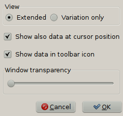
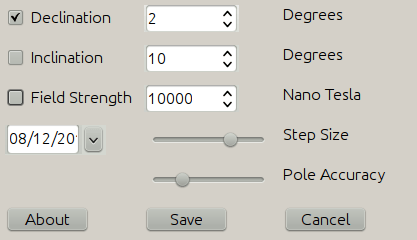
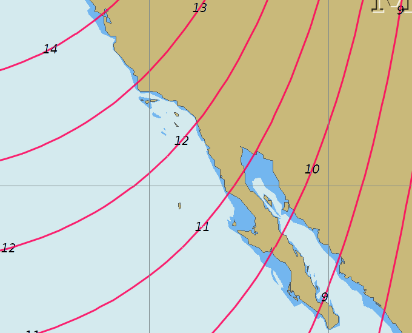
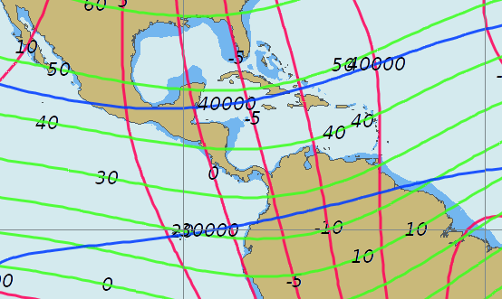

World Magnetic Model Plotting allows users to cross reference the magnetic deviation values printed on many raster charts.
Variation is the angle between true and magnetic north.
Inclination is the vertical angle of the magnetic field.
A compass is adjusted for the inclination in the intended sales region.
If you buy a compass in Europe; it will not be level in Australia, for example.
Field Strength is the magnetic field in nano tesla from 20000 to 66000.
Currently the total field strength is shown, with no immediate practical use. Hopefully this will change to show the horizontal component in the future, that has an impact on whether the compass works or not, near the magnetical poles.
The plotted lines are similar to a topographic map. The space between them can be adjusted; more space takes less time to calculate.
The Step size and Pole accuracy sliders allow a trade off for speed vs computation time.

With the extended Radio-button, this dialog will show on the screen

F - Total Intensity of the geomagnetic field
H - Horizontal Intensity of the geomagnetic field
X - North Component of the geomagnetic field
Y - East Component of the geomagnetic field
Z - Vertical Component of the geomagnetic field
I (DIP) - Geomagnetic Inclination
D (DEC) - Geomagnetic Declination (Magnetic Variation)
Click “Settings” and adjust the display of the graphical plot.

Show variation only.

Or all options together.
